Edinburgh Castle is a fortress located on Castle Rock in the city of Edinburgh, the capital of Scotland. This fortress was built in the XII century and served as the residence of the Scottish kings. Nowadays, it has become the main tourist attraction of the city.
Edinburgh Castle is surrounded by a pentagon-shaped wall. The castle has many buildings, including the royal apartments, the Chapel of St. Margaret, the Arsenal building etc.
One of the most famous sights of the castle is the Chapel of St. Margaret built in the XIII century. It is one of the oldest buildings in Scotland. The grave of King Robert the Bruce is located here.
Another famous landmark is the Great Hall built in the XV century. It was used for banquets and other special events.
It is also worth noting that the Stone of Destiny, which was used at the coronation of the Scottish monarchs, is kept in Edinburgh Castle. This stone was stolen by the British in 1296, but in 1996 it was returned back to Scotland.
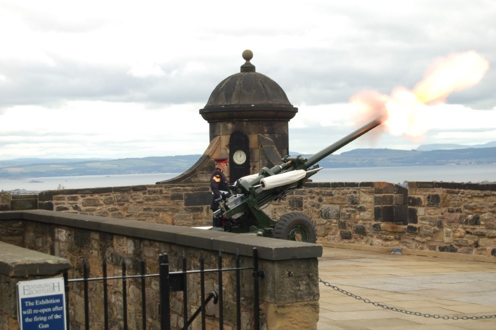
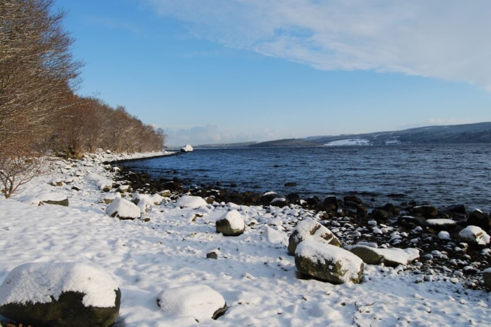
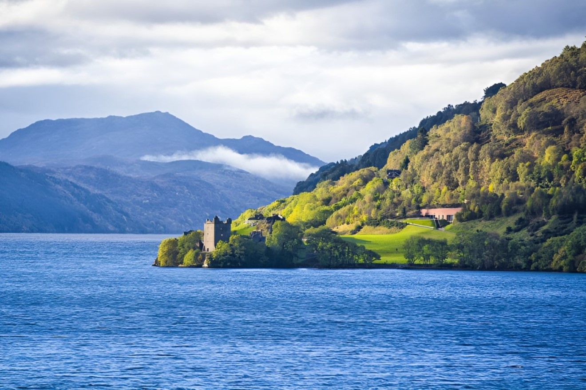
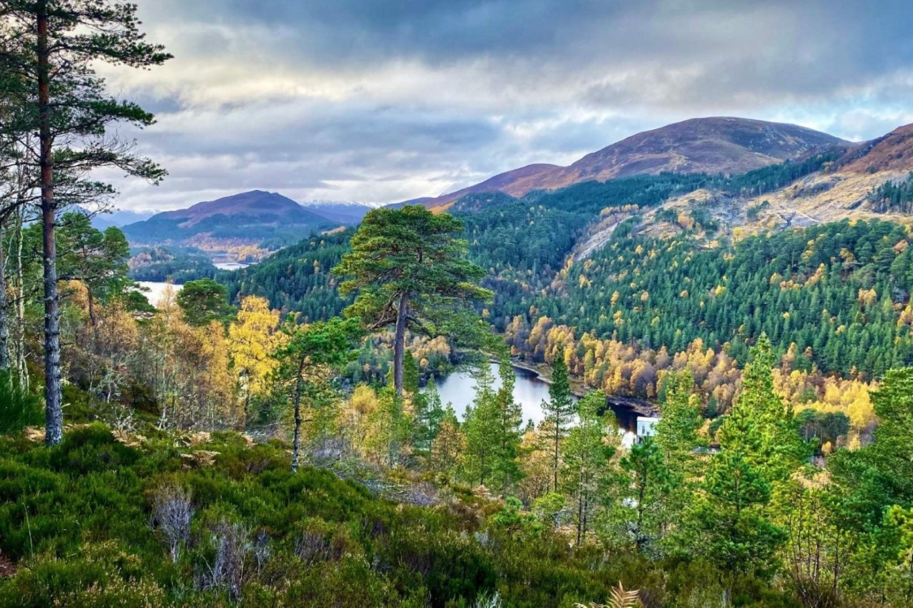
Loch Ness
Loch Ness is one of the most intriguing bodies of water in the world due to its rich history and legends. Evidence of human presence dates back to the Mesolithic period, and it was during the Middle Ages that it became famous for its mythical creature, known as 'Nessie.'
There are several theories about Nessie, including that it is a prehistoric plesiosaur, a giant eel, or a misidentification of a known animal. One theory proposes that it is a manifestation of the collective unconsciousness of the people who live near the loch. Another theory suggests that it is a guardian of the loch, protecting its secrets and treasures.
Loch Ness is said to hold many secrets and treasures, including lost artifacts and the power to heal and transform humanity.
Aberdeen
Aberdeen is a city located in the north-east of Scotland. It is the third largest city in Scotland after Glasgow and Edinburgh. The city is known for its rich historical heritage, cultural attractions and educational institutions.
The city is known for its universities, including the University of Aberdeen, which is one of the leading research universities in the UK.
Aberdeen's architectural landmarks include St Machar's Cathedral, which is one of the largest Gothic cathedrals in Scotland, and the Aberdeen Tower, which is the symbol of the city.
Aberdeen has many parks and gardens, the largest of which are the Royal Park and the Botanical Garden, where you can see many rare northern plants.
The city is also known for its festivals and events, including the Aberdeen International Film Festival and the Aberdeen Arts Festival.
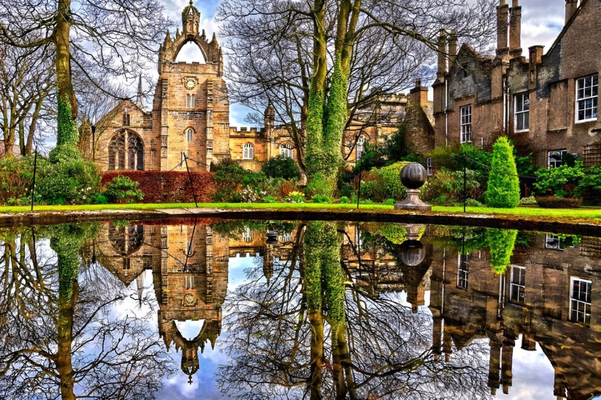
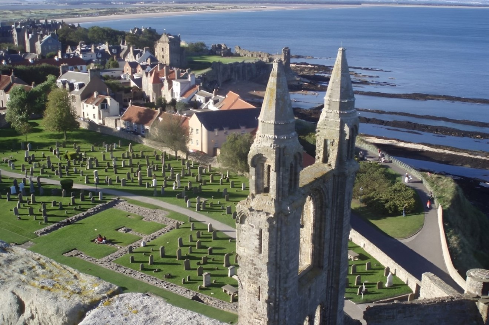
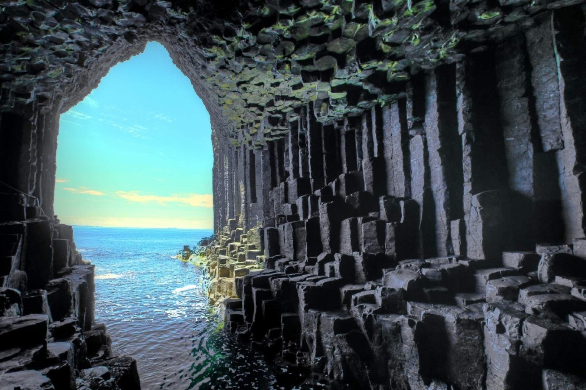
Fingal's Cave
Located off the coast of Scotland, Fingal's Cave is a natural wonder that has captivated the imagination of visitors for centuries. The cave, nestled on the uninhabited island of Staffa, is steeped in history, mythology, and breathtaking beauty.
The cave's association with mythology, folklore, and local legend only adds to its allure. According to local legend, the cave was named after the legendary Scottish hero, Fingal.
Fingal's Cave is also significant for its geological features. The cave is formed from hexagonal basalt columns, which were created when molten lava cooled and solidified rapidly underwater.
Visitors can explore Fingal's Cave through guided tours or self-guided visits by boat. Inside the cave, visitors can marvel at the towering ceiling, admire the intricately formed basalt formations, and listen to the echoes of their footsteps. Swimming and snorkeling in the crystal-clear waters surrounding the cave are also popular activities.
New Lanark
New Lanark is a picturesque village in South Lanarkshire, Scotland, with a rich history and a fascinating story spanning over two centuries. It has transformed from a small cotton mill village to a thriving tourist destination. Founded in 1785 by David Dale, it quickly grew and became one of the largest cotton mill centers in Scotland. However, in the mid-20th century, the industry declined, leaving many of the village's iconic buildings abandoned and derelict.
In the late 1960s, a group of visionaries restored the village, including the famous social reformer Robert Owen. Today, visitors can explore the restored mills and several museums, including the New Lanark Museum. New Lanark's charm lies in its blend of industrial heritage and natural beauty, with stunning architecture and opportunities for outdoor enthusiasts. Its vibrant community spirit and cultural events make it a unique destination, and its commitment to sustainability is an inspiration to others.
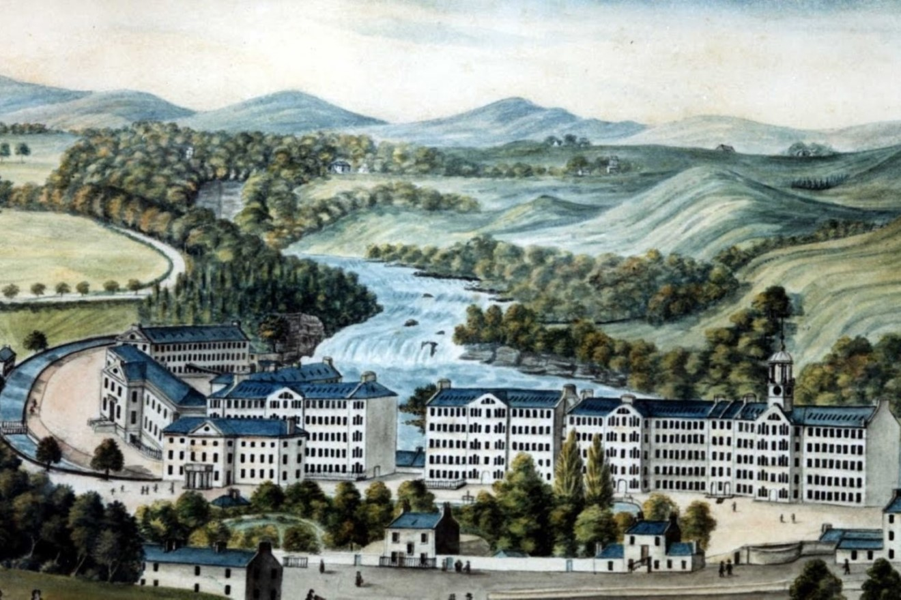
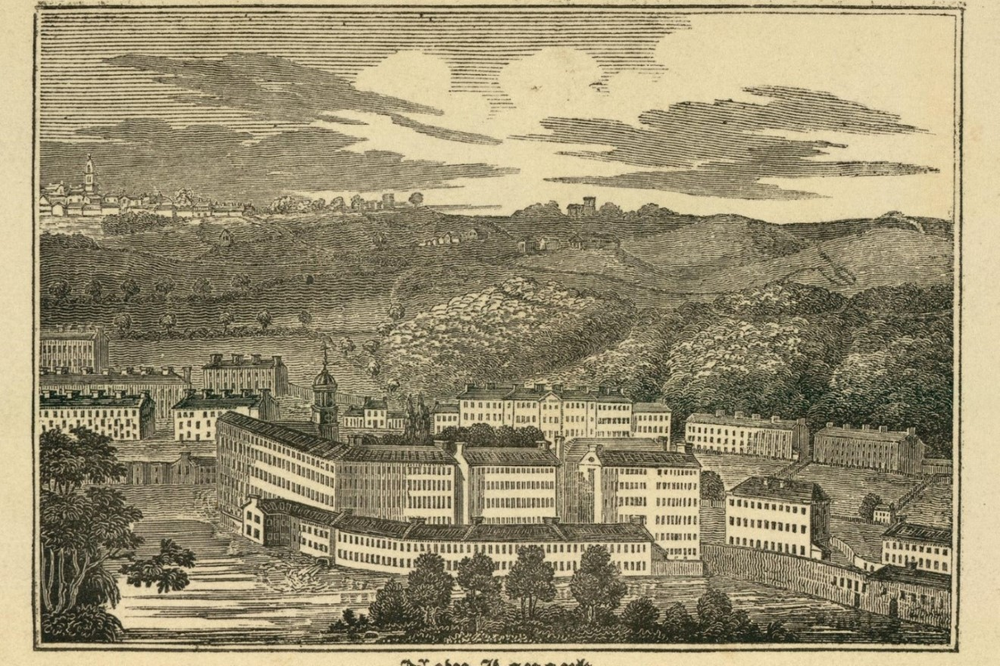
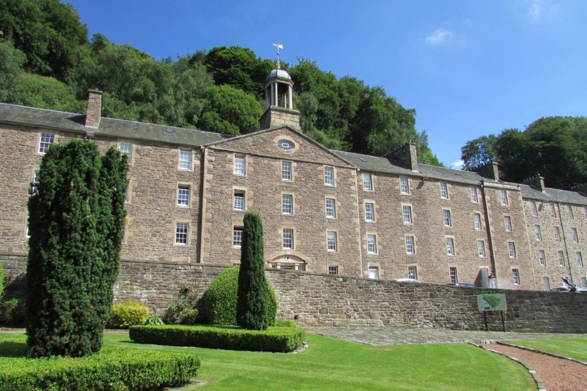
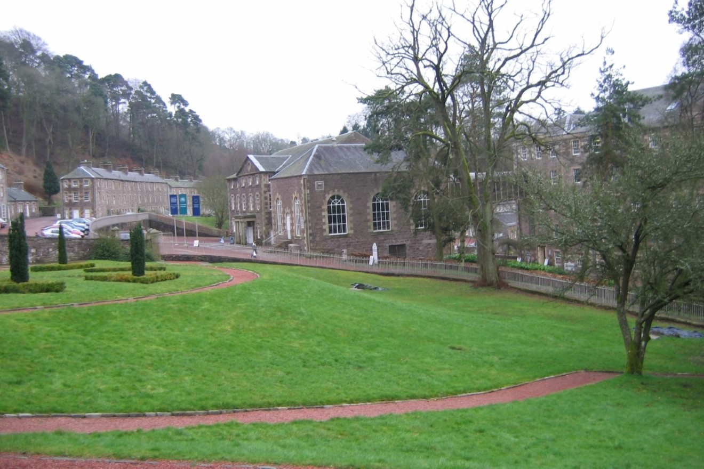
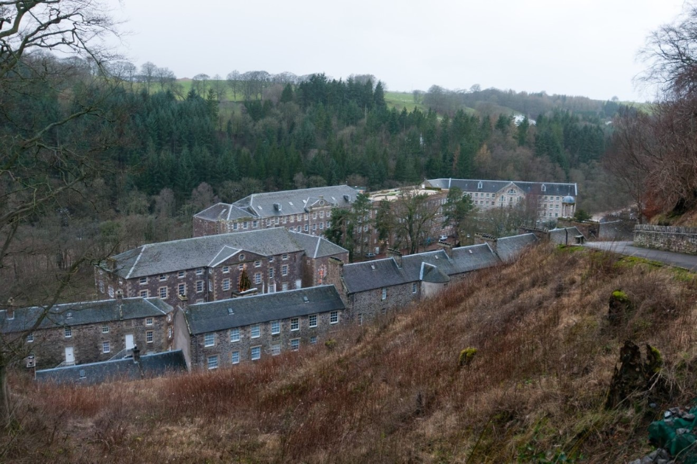
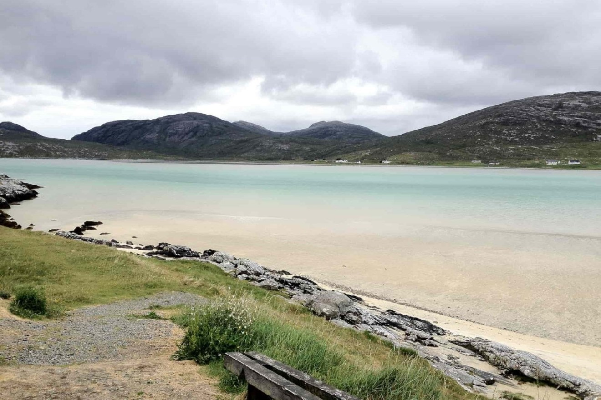
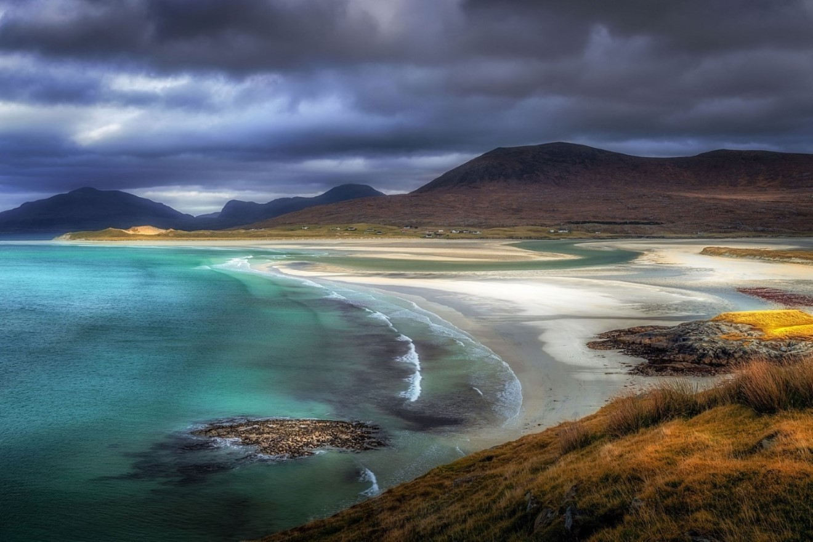
Luskentyre Beach
Luskentyre Beach, located on the west coast of Lewis and Harris in Scotland, is a secluded and natural gem waiting to be discovered. Surrounded by rugged hills and dunes, the beach offers a sense of seclusion and peace that is hard to find. Its crystal-clear waters are home to a variety of marine life, including fish, dolphins, and porpoises. The beach is also known for its "singing sands" — a unique phenomenon that is caused by the shape of the sand particles and can only be found in a few places around the world.
Luskentyre Beach also has a rich history and culture, with ancient Viking settlements once being present. The remnants of these settlements can still be seen in the form of ruined buildings and artifacts scattered throughout the beach.
With its pristine environment, unique geological features, and abundant wildlife, Luskentyre offers an unforgettable experience for those who seek adventure, relaxation, and connection with nature.
Dunrobin Castle
Dunrobin Castle is a medieval fortress located in the heart of Scotland with an illustrious history and stunning architecture. It is a must-visit destination for anyone interested in exploring Scotland's rich heritage. The castle dates back to the 14th century and has undergone numerous renovations and expansions over the centuries. The most significant transformation took place in the 19th century when the castle was redesigned in the Gothic Revival style. The castle's architecture blends medieval and Renaissance styles and features intricate stone carvings, battlements, and imposing towers. The castle's interior showcases opulent decorative arts from the 17th to 19th centuries, with grand entrance halls, ornate ceilings, chandeliers, and state rooms filled with antique furniture and fine art. The castle's gardens and grounds cover over 180 acres and feature beautifully manicured lawns, tranquil ponds, and a variety of flora and fauna. The castle is open daily from 10 am to 5 pm from April to October and from 10 am to 4 pm from November to March.
 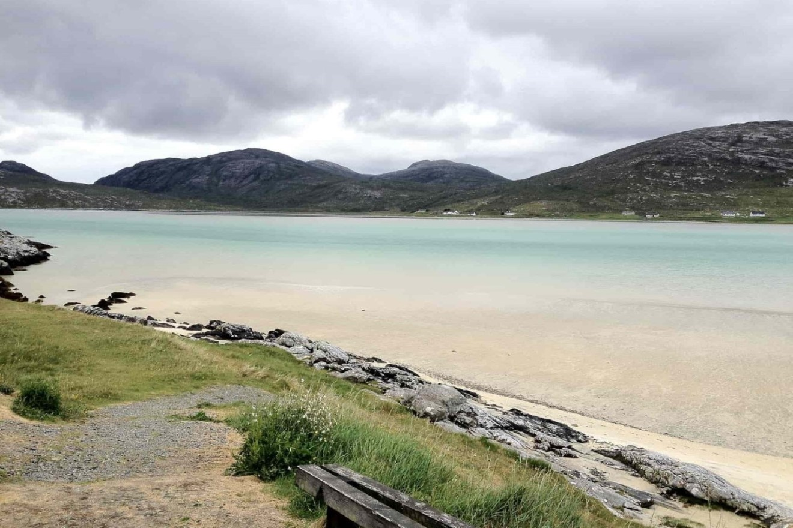
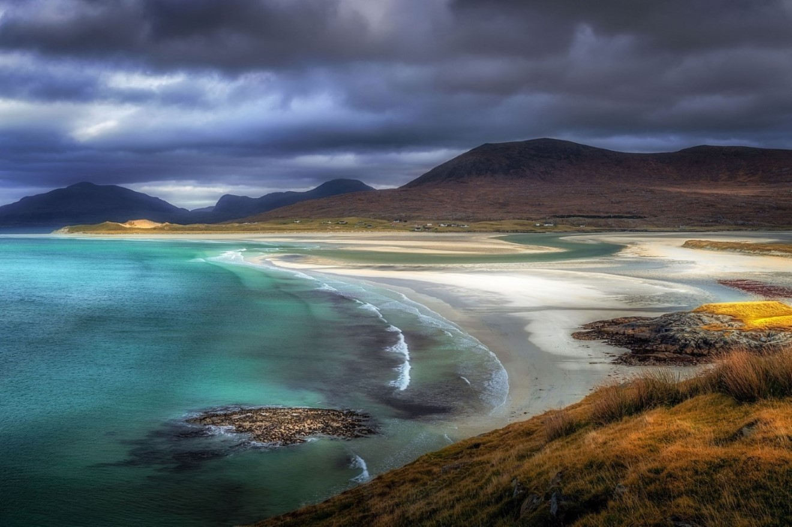
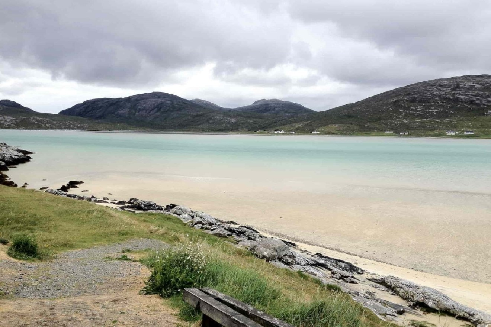
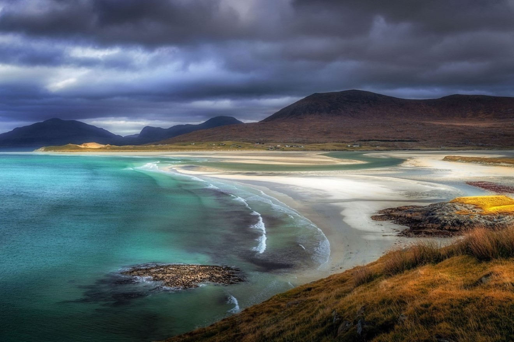